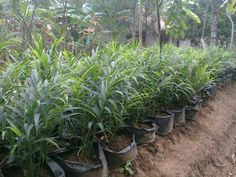
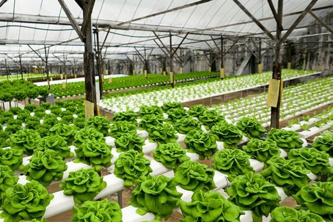

baca selengkapnya >>>>>>
BUDIDAYA TANAMAN JAHE
Jahe merupakan tanaman obat berupa tumbuhan rumpun berbatang semu. Jahe berasal dari Asia Pasifik yang tersebar dari India sampai Cina. Oleh karena itu kedua bangsa ini disebut-sebut sebagai bangsa yang pertama kali memanfaatkan jahe terutama sebagai bahan minuman, bumbu masak dan obat-obatan tradisional. Jahe termasuk dalam suku temu-temuan (Zingiberaceae)......baca selengkapnya >>>>>>

SELEKSI BENIH DAN CARA PESEMAIAN TANAMAN PADI
Untuk menghasilkan bibit tanaman yang baik dan sehat secara pertumbuhan ataupun secara perkembangan perlu adanya perlakuan khusus untuk benih yang akan ditanam........baca selengkapnya >>>>>>

baca selengkapnya >>>>>>
CARA MENANAM SAYURAN HIDROPONIK
Persiapan awal untuk menanam sayuran hidroponik adalah menyediakan peralatan dan bahan-bahan yang diperlukan. Oiya, sebelumnya perlu diketahui bahwa teknik bertanam hidroponik sederhana yang akan kita lakukan menggunakan bahan-bahan.....baca selengkapnya >>>>>>